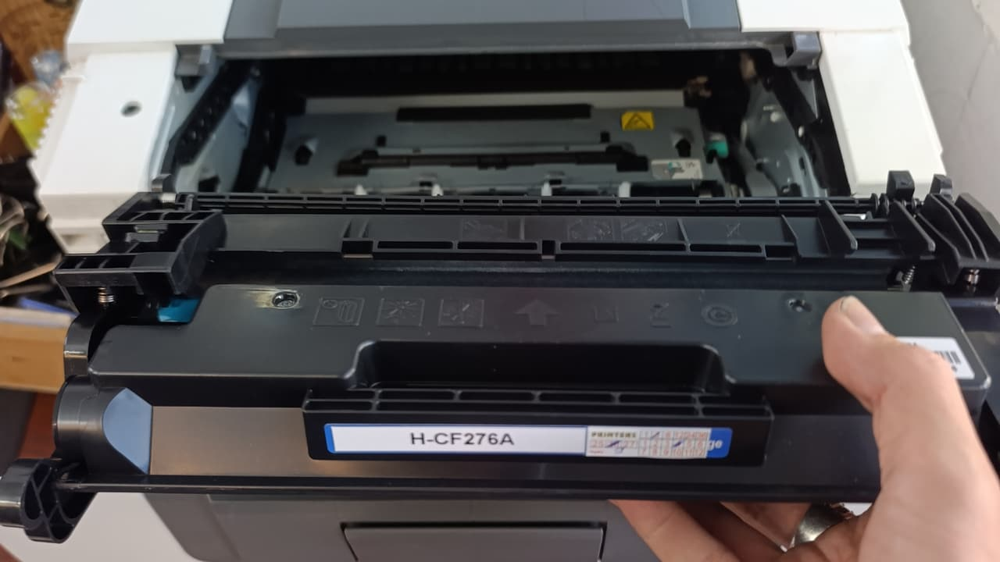
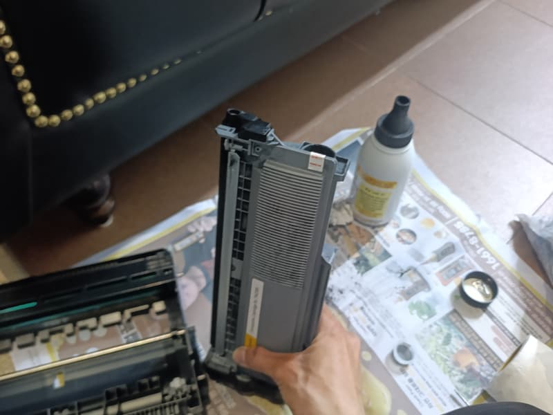
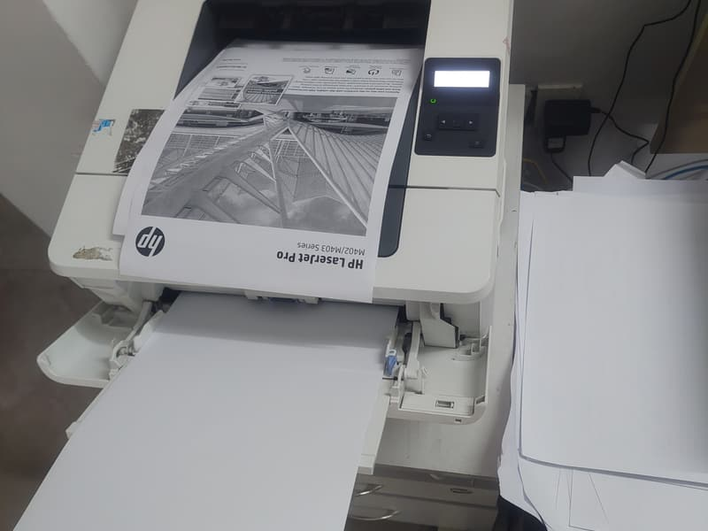

Bơm mực, nạp mực máy in tận nơi — khu Nam TP.HCM
Kho mực và kỹ thuật đặt tại Phạm Hùng. Chúng tôi nhận Quận 8, Quận 7, Quận 6, Quận 5, Quận 4, Bình Chánh và Nhà Bè — xem máy rồi báo giá, anh/chị đồng ý thì mới tháo.
- Laser A4 từ 80.000đ
- Báo giá trước khi tháo máy
- Bảo hành theo số trang in
- Có báo giá văn bản khi cần

Bốn cách gọi, một việc làm
Bơm mực máy in, nạp mực máy in, đổ mực máy in, thay mực máy in — khách gọi bằng cả bốn cách và đều là cùng một việc: cho mực mới vào hộp mực đang dùng, kèm vệ sinh buồng mực. Giá như nhau. Không có chuyện "bơm" rẻ hơn "nạp", và chúng tôi không đổi tên dịch vụ để báo giá khác nhau.
Chỉ có "thay hộp mực" là việc khác thật: bỏ hộp cũ, lắp hộp mới nguyên bộ. Việc này đắt hơn nhưng cần thiết khi vỏ hộp đã nạp quá 4–5 lần, hoặc trống bên trong đã mòn. Kỹ thuật mở hộp xem rồi nói thẳng nên nạp tiếp hay nên đổi hộp — kể cả khi câu trả lời làm chúng tôi bán được ít hơn.

Xem bảng giá đầy đủ theo mã hộp mực
Laser A4 từ 80.000đ, A3 từ 250.000đ, linh kiện niêm yết rõ từng loại.
Khi nào nạp mực là đủ, khi nào phải sửa
Đọc bản in là biết máy cần gì. Dưới đây là sáu triệu chứng gặp nhiều nhất và việc thật sự cần làm.
Bản in nhạt dần, đều cả trang
Hết mực thật. Nạp mực là xử lý xong. Trước khi gọi, anh/chị có thể tháo hộp mực lắc ngang vài lần rồi lắp lại — nhiều máy in thêm được 50–100 trang nữa.
In mờ một bên hoặc một vệt dọc nhạt
Mực phân bố không đều hoặc trục từ mòn. Vệ sinh và nạp lại thường hết; nếu còn thì thay trục từ 120.000 – 180.000đ.
Sọc đen dọc, lặp lại theo chu kỳ đều nhau
Trống đã xước. Nạp thêm mực không giải quyết được — phải thay trống 180.000 – 280.000đ.
Lem mực ở mép giấy, tay chạm vào bị bẩn
Gạt mực hở hoặc buồng mực thải đã đầy. Hút sạch mực thải và thay gạt là xử lý được trong cùng lượt đi.
Bản in nhoè như bị ẩm, chữ bôi ra được
Lô sấy không nung chảy hết mực. Đây không phải lỗi mực — cần kiểm tra lô sấy và bao lụa.
Vừa nạp mực xong máy vẫn báo hết mực
Máy khoá chip. HP đời mới, Samsung và Fuji Xerox gần như luôn phải reset hoặc thay chip sau khi nạp. Kỹ thuật mang chip theo sẵn.
Vì sao khách khu Nam gọi chúng tôi
Kho đặt ngay khu Nam
Kho mực và kỹ thuật đặt tại Phạm Hùng, xã Bình Hưng — sát ranh Quận 8 và nhìn sang Quận 7 qua Nguyễn Văn Linh. Cả bảy khu đều nằm trong bán kính gần, không phải chạy từ trung tâm sang.
Báo giá trước khi tháo máy
Khung giá nói trong cuộc gọi, chốt lại tại chỗ sau khi xem máy. Phát sinh linh kiện phải được anh/chị đồng ý.
Bảo hành theo số trang in
Tính theo số trang thực tế chứ không theo ngày — công bằng cho cả máy in nhiều và máy in ít.
Mang đủ vật tư theo xe
Trống, trục từ, gạt mực, chip, bánh kéo giấy. Phần lớn ca xử lý xong trong một lượt, không hẹn lại lần hai.
Nhận bảo trì theo tháng
Công ty, xưởng, kho và trường học trong khu Nam có thể ký bảo trì tháng: chúng tôi theo dõi số trang và chủ động xử lý trước khi máy dừng giữa giờ làm.
In thử trước khi rời đi
Kiểm độ đậm, lem mực, kẹt giấy. Máy chạy ổn mới tính là xong việc.
Khu vực phục vụ và thời gian tới thật
Kho vật tư đặt tại 5/19 Phạm Hùng. Thời gian dưới đây là khung thật theo khoảng cách, không phải một con số dán cho cả thành phố.
Nhận nạp mực cho máy của những hãng nào
Chúng tôi nhận tất cả máy in laser và phun mực phổ thông. Dưới đây là các mã hộp mực gặp nhiều nhất, để anh/chị đối chiếu nhanh với nhãn trên hộp mực nhà mình.
| Hãng | Mã hộp mực gặp nhiều | Lưu ý |
|---|---|---|
| HP | 12A (Q2612A), 35A, 85A, 49A, 05A, 80A, 17A, W1106A (107a/135w/137fnw) | Dòng 107a/135w khoá chip — nạp xong phải thay chip |
| Canon | EP-26 / 303 (LBP2900), 325, 326, 329, 051 (LBP162dw), 308, 319 | LBP2900 nạp rất bền, nhiều máy dùng trên mười năm |
| Brother | TN-1000, TN-2130, TN-2260, TN-2365, TN-2385 · trống DR-2255 / DR-2355 | Hộp mực và trống tách riêng — đừng thay trống khi chưa cần |
| Samsung | MLT-D101S, D104S, D111S, D203, D205 | Gần như model nào cũng phải thay chip sau khi nạp |
| Fuji Xerox | CT202137, CT201610 (P225), CT202877 (P235), CWAA0747 (DP3117) | Phải kiểm tra hộp mực thải, để đầy là tràn vào máy |
| Epson | Laser: S050521, S110078 · Phun mực hệ bình: mực 003, mực 664 | L-series là bơm mực nước, khác hẳn laser — nói rõ model khi gọi |
| Panasonic | KX-FAT410, KX-FAT411, KX-FA83 · trống KX-FAD412 | Hộp khó tháo, công nạp cao hơn các hãng khác |
| Ricoh | SP111 (407971), SP200 (407254), SP310 (407578), MP2014 (842135) | Hộp dung tích lớn, tính trên mỗi trang in lại rẻ |
Không thấy máy của anh/chị trong bảng? Gọi 0986 704 260 và đọc tên model — chúng tôi nhận gần như toàn bộ máy in laser và phun mực phổ thông.
Quy trình làm việc
Năm bước, và bước nào cũng có thể dừng nếu anh/chị không đồng ý giá.
Gọi hoặc nhắn Zalo
Anh/chị đọc dòng máy (ví dụ HP 107a, Canon 2900, Brother L2321d) và địa chỉ. Chúng tôi báo khung giá ngay trong cuộc gọi, không hẹn báo sau.
Kỹ thuật tới tận nơi
Mang theo mực, chip, trống, trục từ và giấy in thử. Anh/chị không phải tháo máy hay mang máy đi đâu.
Xem máy & chốt giá
Kiểm tra hộp mực, trống, trục. Nếu phát sinh linh kiện, báo giá trước và chờ anh/chị đồng ý.
Nạp mực & vệ sinh
Hút sạch mực thải, vệ sinh trống – trục – gạt, nạp mực mới, lắp lại. Khoảng 15–20 phút cho máy A4.
In thử & bảo hành
In thử trước mặt anh/chị. Nhận phiếu bảo hành tính theo số trang in. Lỗi do mực — chúng tôi quay lại miễn phí.

Câu hỏi thường gặp
Nạp mực máy in tận nơi mất bao lâu?
Kho đặt ở Phạm Hùng (xã Bình Hưng) nên khu Bình Hưng và Quận 8 nhanh nhất, thường 15–30 phút. Quận 4, Quận 5, Quận 6 khoảng 25–40 phút. Quận 7 khoảng 30–50 phút. Nhà Bè và các xã xa của Bình Chánh thì 45–75 phút. Thao tác nạp mực và vệ sinh buồng mực mất thêm 15–20 phút.
Giá nạp mực máy in bao nhiêu?
Hộp mực laser A4 của HP và Canon là 80.000 – 100.000đ, đã gồm công đi lại và vệ sinh buồng mực. Brother, Samsung, Fuji Xerox 120.000đ. Panasonic 140.000đ. Máy A3 từ 250.000đ. Máy phun mực hệ bình Epson L-series 150.000 – 200.000đ. Toàn bộ xem ở trang bảng giá.
Nạp mực, đổ mực, bơm mực, thay mực khác nhau không?
Với khách thì là cùng một việc: cho mực mới vào hộp mực đang dùng. Chỉ "thay hộp mực" mới khác — là bỏ hộp cũ lắp hộp mới nguyên bộ, đắt hơn nhưng cần thiết khi vỏ hộp đã nạp quá nhiều lần. Kỹ thuật xem hộp rồi nói rõ nên nạp hay nên thay.
Nạp mực có làm hỏng máy in không?
Không, nếu làm đúng cách. Rủi ro thật nằm ở nạp sai loại mực hoặc không hút hết mực thải — khiến bản in lem và trống nhanh xước. Chúng tôi hút sạch mực thải, vệ sinh trống – trục – gạt rồi mới nạp, và in thử trước khi rời đi.
Bảo hành như thế nào?
Bảo hành theo số trang in thực tế, ghi trên phiếu. Nếu trong thời gian đó bản in mờ, lem hay sọc do lỗi mực, chúng tôi quay lại xử lý miễn phí — kể cả phải đổi hộp mực khác.
Khi nào nên thay hộp mực mới thay vì nạp lại?
Khi vỏ hộp đã nạp quá 4–5 lần, trống mòn gây sọc đen lặp lại theo chu kỳ, hoặc gạt mực hở làm lem dù vừa vệ sinh. Lúc đó nạp thêm chỉ tốn tiền mà bản in vẫn kém — kỹ thuật sẽ nói thẳng để anh/chị chọn.
Máy in đang dừng? Gọi là có người đi ngay
Kho ở 5/19 Phạm Hùng — Quận 8, Quận 4, Quận 5, Quận 6 thường 15–40 phút. Xem máy rồi báo giá, anh/chị đồng ý mới tháo.